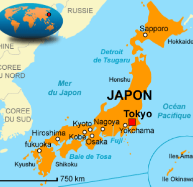
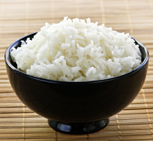
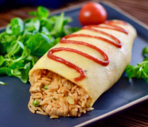
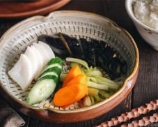
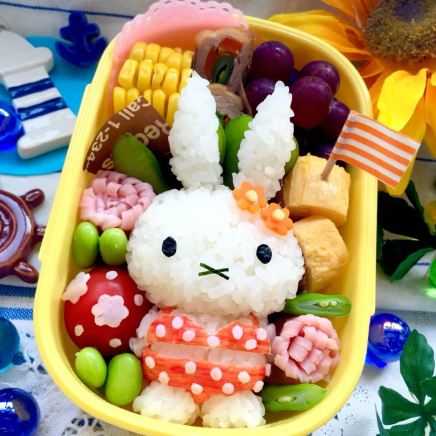
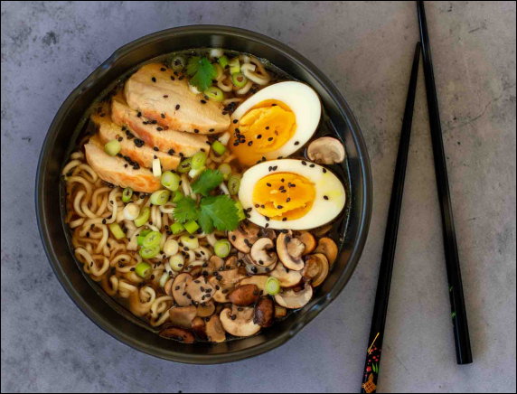
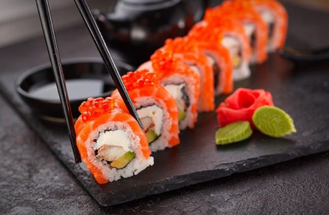
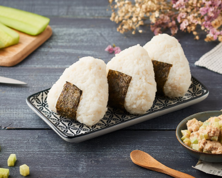
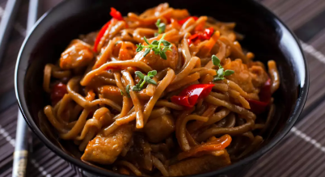
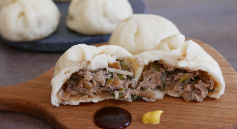

Présentation
Des plats incontournables difficile d'établir un programme culinaire lorsque l'on visite un pays étranger. Mais si vous devez vous rendre au Japon, ne ratez surtout pas différentes spécialités typiques de l'archipel. Vous allez découvrir grâce à moi les différentes spécialités culinaires que nous offres le pays du soleil levant en passant les différents mets de la journée
Le petit déjeuner japonais
A l'image du reste de la gastronomie du pays, le petit-déjeuner japonais traditionnel est extrêmement complet et équilibré. A l'inverse de celui consommé en France,les Japonais privilégient des ingrédients salés dès le matin, et des sucres lents. Par manque de temps, de plus en plus de Japonais réservent ce petit-déjeuner traditionnel aux week-ends et jours fériés, même si ses différents composants restent toujours aussi délicieux.
LES INGRÉDIENTS POUR UN PETIT-DÉJEUNER TRADITIONNEL JAPONAIS
Principalement constitué de riz blanc,de protéines, ainsi que de petits accompagnements tels que des légumes marinés, le petit-déjeuner japonais est tellement complet qu'on pourrait le servir sans problème en tant que déjeuner ou dîner. Pour la boisson, on opte pour du thé vert servi chaud ou froid selon les envies, ou la saison.
Le riz
Comme je le présentais dans l'introduction l'élément principal du petit déjeuner japonais est le riz, le riz est souvent servi blanc lorsqu'il n'est pas accompagné d'un œuf, a noter qu'on peut également le déguster accompagné de nori (algues japonaises), ou même de nattô pour les plus téméraires.
Les protéines
A côté du riz, vous trouverez ensuite les protéines. Qu’elles prennent la forme d’une omelette, de saumon grillé ou même de tofu, les protéines sont en effet inhérentes au petit-déjeuner japonais. Elles s’accompagnent également d’une soupe miso, recommandée par les nutritionnistes pour sa faible teneur en sel.
Les légumes
Le premier repas de la journée se compose enfin de tsukemono, comme le daikon (radis blanc), le concombre, ou l’umeboshi (prune confite). Ces derniers viennent dynamiser les saveurs avec leur goût âpre, et leurs vertus nutritionnelles sont parfaitement adaptées au début de la journée puisqu’ils sont riches en vitamines.
Le déjeuner japonais
Au Japon, personne ne rentre déjeuner à la maison; En général ce repas est le moins copieux de la journée, il est pris sur le pouce et peut durer seulement 5 minutes. Il prend souvent la forme d’un bento,un onigiri, ou des ramen amené au travail ou à l’école.
Le bento
Le bentô est à la base la boîte à déjeuner des travailleurs japonais : notre gamelle du midi en somme.Toujours présenté dans une jolie boîte compartimentée, le bentô se compose de plusieurs petites quantités de mets, aux saveurs différentes mais se mariant toujours parfaitement.
Le ramen
Le ramen, un plat emblématique Très populaire au Japon, le ramen est un plat de nouilles plongées dans un bouillon à base de poisson ou de viande et aromatisé à la sauce soja ou miso. Il existe de nombreuses variantes de ce plat dans tout le pays avec un grand choix de garnitures.
Les Sushis
Les Sushis Véritables symboles de la cuisine japonaise, ils incarnent parfaitement cet art culinaire. Il faut près d'une dizaine d'années pour un chef sushi afin d'en maîtriser toutes les subtilités : la cuisson et l'assaisonnement du riz, l'affûtage des couteaux, le choix du poisson, le découpage en fines lamelles et l'assemblage des ingrédients.
Les Onigiris
Voici la recette des onigiris qui sont des boulettes de riz habituellement entourées d'une algue nori et remplies d'une farce à la viande ou aux légumes.Il peut être un peu n'importe où. Très souvent, les Japonais les décorent en coupant des petits morceaux d'algue nori afin de leur donner l'aspect d'un visage de chat, de chien, etc.
Le diner japonais
Les Japonais ont tendance à prendre leur dîner assez tôt, généralement autour de 19 heures. Le soir, ils prennent plaisir à se retrouver en famille pour déguster des repas traditionnels aussi complets que copieux. Le dîner se compose de plusieurs plats. En principe, les Japonais servent ces plats avec du riz et une soupe miso. Le miso désigne une sorte de pâte fermentée qui est conçue à base de soja. Cependant, les Japonais sont également de plus en plus nombreux à opter pour la street food, ou cuisine de rue.
Soba (nouilles sautées)
Le soba そば (ou 蕎麦) est une sorte de spaghetti typiquement japonais.Froid, le soba est servi sur une sorte de tamis en bambou, accompagné d’algues séchées, et d’une sauce(à base de sauce soja) agrémentée de petits onions, et de… wasabi.Chaud, le soba flotte dans une soupe (le plus souvent, aux légumes). Le soba peut se manger à toute heure de la journée: aux repas, mais aussi entre les repas, comme en-cas
Les nikuman
Les nikuman 肉まん sont des brioches à la vapeur d’origine chinoise et qui sont très populaires au Japon surtout dans les combini (supermarché de proximité).Les nikuman sont délicieux, légers en bouche tout en étant copieux, moelleux et constituent un excellent en-cas pour le goûter. Ils sont réalisables facilement et ne sont pas trop gras.
